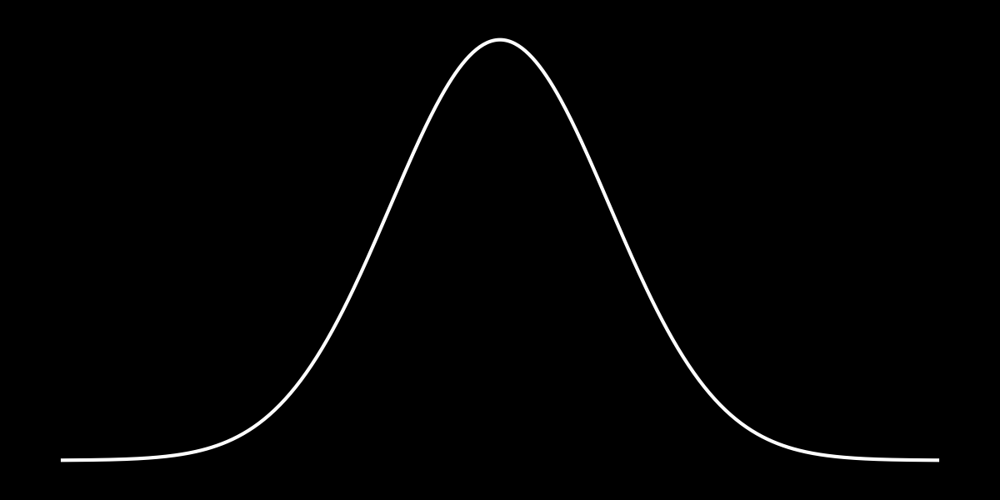
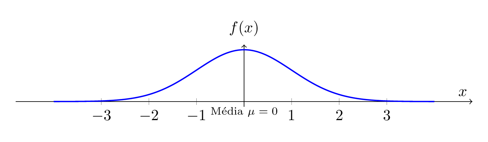
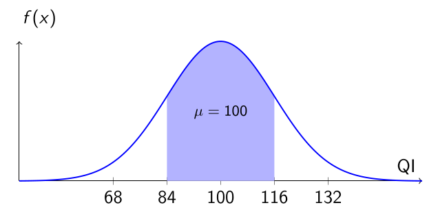
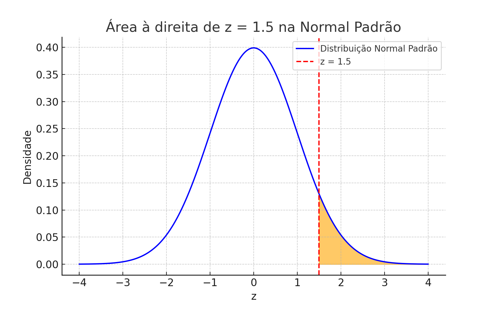
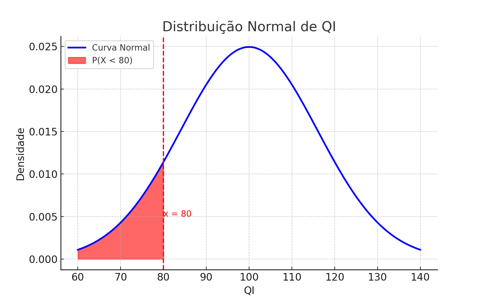
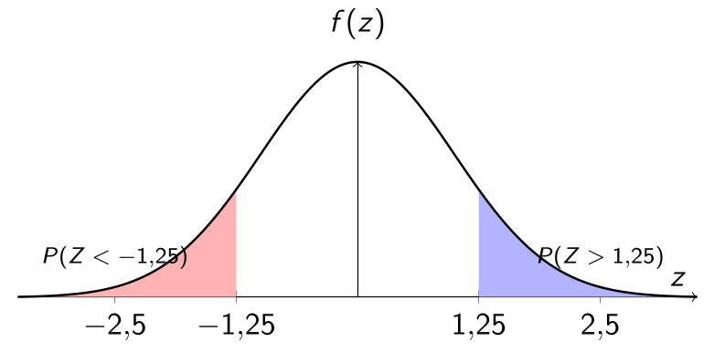

import matplotlib.pyplot as plt
import numpy as np
# Distribution parameters
mu = 100
sigma = 16
x = np.linspace(40, 160, 1000)
y = 1 / (np.sqrt(2 * np.pi) * sigma) * np.exp(- (x - mu)**2 / (2 * sigma**2))
# Separated bands of the empirical rule
bands = [
{'label': '3σ: 52 to 68', 'x1': mu - 3*sigma, 'x2': mu - 2*sigma, 'color': '#FFC0CB'},
{'label': '2σ: 68 to 84', 'x1': mu - 2*sigma, 'x2': mu - 1*sigma, 'color': '#ADD8E6'},
{'label': '1σ: 84 to 100', 'x1': mu - 1*sigma, 'x2': mu, 'color': '#90EE90'},
{'label': '1σ: 100 to 116', 'x1': mu, 'x2': mu + 1*sigma, 'color': '#90EE90'},
{'label': '2σ: 116 to 132', 'x1': mu + 1*sigma, 'x2': mu + 2*sigma, 'color': '#ADD8E6'},
{'label': '3σ: 132 to 148', 'x1': mu + 2*sigma, 'x2': mu + 3*sigma, 'color': '#FFC0CB'}
]
# Create figure (no figsize to use Quarto's fig-width/fig-height)
fig, ax = plt.subplots()
ax.plot(x, y, color='black')
# Fill bands
for band in bands:
x_fill = np.linspace(band['x1'], band['x2'], 500)
y_fill = 1 / (np.sqrt(2 * np.pi) * sigma) * np.exp(- (x_fill - mu)**2 / (2 * sigma**2))
ax.fill_between(x_fill, y_fill, color=band['color'], label=band['label'])
# Mean line
ax.axvline(mu, color='blue', linestyle='--', linewidth=2, label='Mean (μ = 100)')
# Customization
ax.set_title('IQ Distribution — Empirical Rule with Separated Bands')
ax.set_xlabel('IQ')
ax.set_ylabel('Probability Density')
ax.grid(True, linestyle="--", alpha=0.3)
ax.legend(loc='upper right')
plt.tight_layout()
plt.show()📠📊 Statistics Course: The Normal Distribution (Part 1): Introduction to the Normal Distribution
statistics
normal distribution
courses
exercises
This course aims to present, in an accessible and applied way, the fundamentals of the normal distribution, also known as the Gaussian distribution, supported by graphical visualizations and computational tools.
↠Course Summary · ↠Statistics Courses · ↠Statistics Section

1 📠📊 The Normal Distribution — Part 1
This course aims to present, in an accessible and applied way, the fundamentals of the normal distribution, also known as the Gaussian distribution, supported by graphical visualizations and computational tools.
📌 Post Objectives
- The Gaussian curve and the Empirical Rule;
- The concept of the \(z\)-score and how to use it to calculate probabilities;
- The interpretation of the area under the curve and its applications in real-world situations;
- Practical calculations using the Z Table, R, and Excel.
🌱 Introduction: What Are We Studying?
Before diving into the normal distribution, it is essential to understand some key concepts in statistics. They provide the foundation for understanding how we can describe and analyze real-world data.
🔢 Population The complete set of elements with a characteristic of interest. Examples: all the students in a school, all the light bulbs produced by a factory, or all the inhabitants of a country.
🧪 Sample A subset of the population, used when it is not feasible to measure all elements. A well-chosen sample allows us to make inferences about the population. Example: measuring the IQ of 200 students to estimate the average IQ of the school.
-
🲠Random variable Represents an uncertain phenomenon, whose possible values are associated with numerical outcomes. It can be:
- Discrete: takes on specific, countable values (number of children per family, calls answered per day).
- Continuous: can take any value within an interval (height in inches or centimeters, time, temperature, IQ).
📊 Probability distribution Shows how the values of a random variable are distributed. Examples: the chance of a baby being born at a certain weight; the probability of a car consuming a given amount of fuel.
📈 Probability density function (PDF) For continuous variables, we use curves instead of tables. The height of the curve indicates the relative probability of each value, and the area under the curve represents the total probability of an interval. Example: the area between 63 inches and 67 inches (≈160–170 cm) on the human height curve indicates the proportion of people in this range.
⚖️ Mean (\(\mu\)) The central value of the distribution. Example: if the average height of adults is 67 inches (≈170 cm), then this is the balance point of the curve.
📠Standard deviation (\(\sigma\)) Measures the dispersion of the data around the mean. The larger \(\sigma\), the more “spread out†the data are. Example: if the average IQ is 100 and \(\sigma = 15\), most people will have an IQ between 85 and 115.
🌍 Importance of the Normal Distribution
The normal distribution is an essential statistical model because it accurately describes many real-world phenomena — both natural and social. It especially emerges when several random and independent causes influence a final outcome. In such cases, data tend to cluster around a mean, forming the classic bell-shaped curve.
🔠Why does this matter? Because normality simplifies statistical analysis and enables the use of powerful inference tools.
📌 Practical examples:
📚 Standardized test scores: results are distributed around the mean, with only a few students scoring very high or very low.
🌿 Plant height of the same species grown under similar conditions tends to cluster around a central value.
📉 Financial asset returns (stocks, currencies) approximate a normal curve in short periods — though with caveats regarding extreme events.
📈 Assuming normality allows us to:
Calculate probabilities using well-known formulas and tables;
Estimate confidence intervals;
Apply hypothesis tests;
Visualize data in a clear and comparable way.
1.1 📠Standard Normal Curve
The normal curve, also known as the Gaussian distribution, is one of the most fundamental tools in statistics. It describes how certain variables are distributed around a mean, with most values concentrated near that mean and fewer values at the extremes.
When we talk about the standard normal curve, we are referring to a specific version of this distribution, with:
- mean \(\mu = 0\)
- standard deviation \(\sigma = 1\)
This standardization makes it easier to compare different datasets and forms the basis for many statistical procedures, such as probability calculations, hypothesis testing, and confidence interval construction.
1.1.1 🧠Why Is It So Important?
The standard normal curve is used to:
- model natural phenomena (such as height, weight, measurement errors);
- standardize data into z-scores;
- build reference tables;
- develop inferential reasoning in statistics.

Note
Normal Curve (or Gaussian Distribution): Represents a symmetric distribution around the mean. In the standard version, the mean is \(\mu = 0\) and the standard deviation \(\sigma = 1\). The area under the curve corresponds to the entirety of the observed population.
1.2 🯠Measuring the Invisible
We cannot always directly observe the characteristics of a population. In many cases, we deal with abstract concepts — such as intelligence, musical ability, productivity, or motivation — that cannot be measured in a direct and objective way.
However, even though they are “invisible,†these characteristics leave traces in the data: exams, tests, evaluations, questionnaires, practical performance. This is where statistics comes in: it helps us infer what we cannot see from what we are able to measure.
- It is assumed, for example, that these characteristics:
- tend to cluster around the mean;
- are rare at the extremes (very high or very low values);
- can be represented by symmetric curves, such as the normal curve.
Tip
To estimate is to measure with uncertainty. The normal curve provides us with a way to describe this uncertainty with mathematical precision.
1.3 📠The Normal Curve: A Deeper Look
The normal curve can be understood as the graphical representation of a mathematical function called the probability density function.
- The horizontal axis represents the measured values of the variable: \(x\).
- The vertical axis indicates the height of the curve at each point: \(f(x)\), that is, the probability density.
- The relationship between \(x\) and \(f(x)\) is described by the formula:
\[ \boxed{f(x) = \frac{1}{\sqrt{2\pi\sigma^2}} \cdot e^{-\frac{(x - \mu)^2}{2\sigma^2}}} \]
where:
- \(\mu\) is the mean of the distribution,
- \(\sigma\) is the standard deviation,
- \(e\) is the base of the natural logarithm (approximately 2.718).
In the standard form, we have \(\mu = 0\) and \(\sigma = 1\).
- For each value of \(x\), the function returns the height of the curve at that point.
- The area under the curve between two values represents the probability that the random variable takes a value within that interval.
1.4 📈 Graphical Representation of the Normal Curve

Note
Standard Normal Curve: The curve is centered at \(\mu = 0\) and the standard deviation is \(\sigma = 1\). The area under the curve represents the distribution of the population around the mean.
1.5 📠Empirical Rule — 68% - 95% - 99.7%
The Empirical Rule describes how data are distributed around the mean in a standard normal distribution.
- About 68% of the data lie between \(\mu - 1\sigma\) and \(\mu + 1\sigma\)
- About 95% of the data lie between \(\mu - 2\sigma\) and \(\mu + 2\sigma\)
- About 99.7% of the data lie between \(\mu - 3\sigma\) and \(\mu + 3\sigma\)
Note
The Empirical Rule is a powerful visual tool. It allows us to quickly identify what is common and what is rare in a population that follows a normal distribution.
1.6 📌 Parameters of the Normal Distribution
The normal distribution is not a single curve, but rather a family of curves. Each member of this family is fully described by two population parameters:
Mean \(\mu\): Indicates the center of the distribution. The curve is symmetric around this value.
Standard deviation \(\sigma\): Measures the dispersion of the data. Curves with larger \(\sigma\) are more spread out and flatter; with smaller \(\sigma\), they are more narrow and taller.
Note
In any normal distribution, the curve is perfectly symmetric: the left side is a mirror image of the right side with respect to the mean.
1.6.1 🯠Why Are These Parameters Important?
By knowing \(\mu\) and \(\sigma\), we can:
Locate typical values of the population;
Calculate probabilities of values occurring within certain intervals;
Standardize data from different distributions using the transformation:
\[ \boxed{z = \frac{x - \mu}{\sigma}} \]
This transformation converts any value \(x\) into a z-score, making it possible to use the standard normal distribution directly.
Note
Normal Curves with the Same Mean The mean defines the central position of the curves. The shape (height and width) is controlled exclusively by the standard deviation \(\sigma\).
1.7 📠Example: IQ Distribution (Stanford–Binet)
Let’s apply the normal distribution to a practical case.
Suppose that IQ (Intelligence Quotient) scores follow a normal distribution with:
- Mean \(\mu = 100\)
- Standard deviation \(\sigma = 16\)
1.7.1 🧠Interpretation
Note
Interval of 1 Standard Deviation Around the Mean
The general formula to calculate this interval is:
\[ \mu \pm k\sigma \]
In this example, with \(\mu = 100\), \(\sigma = 16\), and \(k = 1\):
\[ \mu - 1\sigma = 100 - 1 \times 16 = 84 \] \[ \quad \text{and} \quad \] \[ \mu + 1\sigma = 100 + 1 \times 16 = 116 \]
Therefore, according to the Empirical Rule, about 68% of the population has an IQ between 84 and 116.
1.7.2 📊 Visualization

Note
IQ Distribution — Interval of 1 Standard Deviation
The shaded area represents individuals with IQ between 84 and 116. According to the Empirical Rule, this interval contains about 68% of the population.
1.7.3 💡 Conclusion
- The Stanford–Binet test is calibrated to follow this distribution.
- The normal curve makes it possible to assess how common or rare an IQ score is.
- Scores outside the interval \(\mu \pm 2\sigma\) (between 68 and 132) are already considered atypical.
Note
The normal distribution is useful for comparing individuals to the population mean and identifying exceptional performance.
1.8 📠Empirical Rule Applied to IQ Distribution
Note
Empirical Rule Applied to IQ
The IQ distribution (with mean \(\mu = 100\) and standard deviation \(\sigma = 16\)) allows us to clearly visualize the Empirical Rule:
- 68% of individuals have IQ between 84 and 116 \((\mu \pm 1\sigma)\)
- 95% are between 68 and 132 \((\mu \pm 2\sigma)\)
- 99.7% are between 52 and 148 \((\mu \pm 3\sigma)\)
Each band of the curve represents a portion of the population and was drawn with non-overlapping colors to highlight their individual contributions.
1.9 🧪 Example with Python Code: Visualizing the Empirical Rule
Let’s graphically represent an IQ distribution using the empirical rule. Suppose IQ scores follow a normal distribution with mean \(\mu = 100\) and standard deviation \(\sigma = 16\). The chart below shows the non-overlapping bands of the empirical rule:
👨‍💻 🐍 Python Code — generate the figure
Note
This chart highlights how IQ values are distributed around the mean, with colored areas representing:
- Light green: 68% of individuals (84 to 116)
- Light blue: 27% of individuals (68 to 84 and 116 to 132)
- Light pink: 4.7% of individuals (52 to 68 and 132 to 148)
The dashed blue line marks the population mean.
📊 R — generate figure with ggplot2
library(ggplot2)
# Parameters
mu <- 100
sigma <- 16
# Sequence of values
x <- seq(40, 160, length.out = 1000)
y <- dnorm(x, mean = mu, sd = sigma)
df <- data.frame(x = x, y = y)
# Empirical Rule bands
bands <- data.frame(
xmin = c(mu - 3*sigma, mu - 2*sigma, mu - sigma, mu, mu + sigma, mu + 2*sigma),
xmax = c(mu - 2*sigma, mu - sigma, mu, mu + sigma, mu + 2*sigma, mu + 3*sigma),
group = c("3σ", "2σ", "1σ", "1σ", "2σ", "3σ"),
color = c("#FFC0CB", "#ADD8E6", "#90EE90", "#90EE90", "#ADD8E6", "#FFC0CB")
)
# Plot
ggplot(df, aes(x, y)) +
geom_rect(data = bands,
aes(xmin = xmin, xmax = xmax, ymin = 0, ymax = Inf, fill = group),
inherit.aes = FALSE, alpha = 0.6) +
scale_fill_manual(values = unique(bands$color)) +
geom_line(color = "black", linewidth = 1) +
geom_vline(xintercept = mu, color = "blue", linetype = "dashed", linewidth = 1) +
labs(
title = "IQ Distribution — Empirical Rule with ggplot2",
x = "IQ",
y = "Probability Density",
fill = "Interval"
) +
theme_minimal()
Note
In this chart, each interval of the normal curve represents a proportion of the population:
- Light pink: 68.27% of individuals between \(\mu \pm 1\sigma\)
- Light blue: from 68.27% up to 95.45% (between \(\mu \pm 1\sigma\) and \(\mu \pm 2\sigma\))
- Light pink: from 95.45% up to 99.73% (between \(\mu \pm 2\sigma\) and \(\mu \pm 3\sigma\))
The dashed blue line indicates the mean \(\mu = 100\).
1.10 📠Foundation of the Empirical Rule
The Empirical Rule is based on the symmetric shape of the normal curve and on the areas under the curve, which represent probabilities.
- The total area under the normal curve equals 1 (or 100%).
- This area represents the probability of occurrence of values within specific intervals.
- To simplify calculations, we use the standard normal distribution, with mean \(\mu = 0\) and standard deviation \(\sigma = 1\).
Tip
In the standard normal distribution, the probability of a value being between two points \(a\) and \(b\) is given by the integral of the density function between these limits.
1.10.1 🔢 Probability Density Function of the Standard Normal
\[ \boxed{f(z) = \frac{1}{\sqrt{2\pi}}\, e^{-z^2/2}} \]
\[ \boxed{P(a < Z < b) = \int_{a}^{b} f(z)\, dz} \]
Based on this function, we obtain the following approximations:
- \(P(-1 < Z < 1) \approx 68.27\%\)
- \(P(-2 < Z < 2) \approx 95.45\%\)
- \(P(-3 < Z < 3) \approx 99.73\%\)
These percentages give rise to the famous 68–95–99.7 Rule, used in descriptive statistics and inference to evaluate the dispersion of data around the mean in approximately normal distributions.
Note
Standard Normal Distribution and the Empirical Rule
The image illustrates the symmetric bands around the mean \(\mu = 0\):
- 68.27% of the values between \(-1\) and \(+1\) standard deviation;
- 95.45% between \(-2\) and \(+2\);
- 99.73% between \(-3\) and \(+3\).
The area under the curve represents the probability that the value \(Z\) lies within this interval.
1.11 Functions for the Normal Distribution: Excel and R
We can calculate probabilities, cumulative values, and generate plots using specific functions:
In Excel
NORM.DIST(x, mean, standard_dev, cumulative)→ Returns either the density or the cumulative probability of the normal distribution.NORM.S.DIST(z, cumulative)→ Specific function for the standard normal distribution.NORM.INV(probability, mean, standard_dev)→ Returns the value of \(x\) associated with a cumulative probability.NORM.S.INV(probability)→ Returns the value \(z\) in the standard normal distribution.
In R
dnorm(x, mean, sd)→ Returns the probability density at \(x\).pnorm(x, mean, sd)→ Returns the cumulative probability up to \(x\).qnorm(p, mean, sd)→ Returns the quantile \(x\) such that \(P(X \leq x) = p\).rnorm(n, mean, sd)→ Generates a random sample of size \(n\).
Tip
Note: in Excel, cumulative = TRUE returns the cumulative probability; FALSE returns the density.
1.12 Practical Example with R
Let’s visualize the curve of the standard normal distribution \(N(0, 1)\) and highlight the bands of 1, 2, and 3 standard deviations from the mean — known from the Empirical Rule.
# Sequence of z values
x <- seq(-4, 4, length.out = 1000)
y <- dnorm(x)
# Generate the plot
plot(x, y, type = "l", lwd = 2, col = "blue",
xlab = "z", ylab = "Density",
main = "Standard Normal Distribution")
# Mark the Empirical Rule regions
abline(v = c(-1, 1), col = "orange", lty = 2)
abline(v = c(-2, 2), col = "green", lty = 2)
abline(v = c(-3, 3), col = "red", lty = 2)
# Legend
legend("topright",
legend = c("±1σ (68%)", "±2σ (95%)", "±3σ (99.7%)"),
col = c("orange", "green", "red"),
lty = 2, lwd = 1.5, cex = 0.8)
1.13 Practical Example – Probability of IQ Below 120
Problem: What is the probability that a person has an IQ less than 120?
Suppose IQ scores follow a normal distribution with mean \(\mu = 100\) and standard deviation \(\sigma = 16\). We want to calculate:
\[ P(X < 120) \]
In Excel
=NORM.DIST(120, 100, 16, TRUE) Result: \(\approx 0.8944\) or 89.44%
In R
pnorm(120, mean = 100, sd = 16) Result: \(\approx 0.8944\) or 89.44%
Interpretation: approximately 89.44% of the population has an IQ below 120, according to the assumed normal distribution.
1.14 Example: Solving Without Excel or R — Using the z-Score
We want to calculate the probability that a person has an IQ lower than 120, assuming that IQ scores follow a normal distribution with:
- Mean \(\mu = 100\)
- Standard deviation \(\sigma = 16\)
We want to find:
\[ P(X < 120) \]
1.14.1 🧮 Step 1: Standardization with the z-Score
To use the standard normal distribution table, we must first standardize the observed value (120):
\[ z = \frac{x - \mu}{\sigma} = \frac{120 - 100}{16} = 1.25 \]
1.14.2 📖 Step 2: Looking Up the Z Table
Now we use the standard normal table \(Z \sim N(0,1)\) to find \(P(Z < 1.25)\):
| z | 0.00 | 0.01 | 0.02 | 0.03 | 0.04 | 0.05 |
|---|---|---|---|---|---|---|
| 1.2 | 0.8849 | 0.8869 | 0.8888 | 0.8907 | 0.8925 | 0.8944 |
Z Table: \(P(Z < 1.25) = 0.8944\)
About 89.44% of the population has an IQ below 120, according to the standard normal distribution table.
1.15 📠Understanding the z-Score
The z-score is a standardization that transforms any value \(x\) from a normal distribution \(N(\mu, \sigma^2)\) into a value in the standard normal distribution \(N(0, 1)\), with mean 0 and standard deviation 1.
It tells us how many standard deviations the value \(x\) is above or below the mean \(\mu\).
The formula is:
\[ \boxed{z = \frac{x - \mu}{\sigma}} \]
1.15.1 🔠Interpretation:
- If \(z = 0\): the value \(x\) is exactly at the mean \(\mu\).
- If \(z > 0\): the value \(x\) is above the mean.
- If \(z < 0\): the value \(x\) is below the mean.
1.15.2 🯠Why Is It Useful?
The z-score unifies different distributions into a standard form, allowing us to:
- Consult the Z Table of the standard normal distribution \(N(0,1)\);
- Easily calculate cumulative probabilities;
- Compare values across distributions with different means and standard deviations.
1.15.3 📊 Visual Summary: Interpreting the z-Score
Suppose \(x = 124\), with mean \(\mu = 100\) and standard deviation \(\sigma = 16\). The z-score is calculated as:
\[ z = \frac{x - \mu}{\sigma} = \frac{124 - 100}{16} = 1.5 \]
This value represents the relative position of \(x\) in a standard normal distribution.
1.15.3.1 🔹 Cumulative Area up to \(z = 1.5\)

Approximately 93.32% of the values lie below \(x = 124\).
1.15.3.2 🔹 Area Between \(-1.5 < Z < 1.5\)

Approximately 86.64% of the values are within 1.5 standard deviations of the mean, on both sides.
1.15.3.3 🔹 Area to the Right of \(z = 1.5\)

Only 6.68% of the distribution lies above \(x = 124\).
1.15.3.4 ✅ Conclusion
The z-score allows us to:
- Standardize values from different distributions;
- Calculate probabilities using the Z Table or software;
- Visualize the relative position of a value in relation to the mean.
💡 Essential Summary:
\[ \boxed{z = \frac{x - \mu}{\sigma}} \]
This formula is the bridge between any value \(x\) from a normal distribution and its standardized position on the \(N(0,1)\) curve.
1.16 🧮 Calculations with Z Table, R, and Excel
Below are the calculations used in the three z-score examples, reinforcing the previous graphs. We show how to solve them with:
- 📖 Z Table
- 💻 R
- 📊 Excel
1.16.1 🔹 Example 1 — Cumulative Area up to \(z = 1.5\)
We want to calculate: \[ P(Z < 1.5) \]
🔠Z Table — Row 1.5, column 0.00:
| z | 0.00 | 0.01 | 0.02 | 0.03 | 0.04 | 0.05 |
|---|---|---|---|---|---|---|
| 1.5 | 0.9332 | 0.9336 | 0.9340 | 0.9345 | 0.9349 | 0.9353 |
Result: \[ P(Z < 1.5) = \boxed{0.9332} \]
💻 In R:
pnorm(1.5)
# [1] 0.9331928📊 In Excel:
=NORM.S.DIST(1.5, TRUE)Result: 0.9332
1.16.2 🔹 Example 2 — Area Between \(-1.5 < Z < 1.5\)
We want to calculate: \[ P(-1.5 < Z < 1.5) = \] \[ = P(Z < 1.5) - P(Z < -1.5) \]
🔠Z Table:
- \(P(Z < 1.5) = 0.9332\)
- By symmetry: \(P(Z < -1.5) = 1 - 0.9332 = 0.0668\)
Result: \[ P(-1.5 < Z < 1.5) = 0.9332 - 0.0668 = \boxed{0.8664} \]
💻 In R:
📊 In Excel:
=NORM.S.DIST(1.5, TRUE) - NORM.S.DIST(-1.5, TRUE)Result: 0.8664
1.16.3 🔹 Example 3 — Area to the Right of \(z = 1.5\)
We want to calculate: \[ P(Z > 1.5) = 1 - P(Z < 1.5) \]
🔠Z Table:
\[ P(Z > 1.5) = 1 - 0.9332 = \boxed{0.0668} \]
💻 In R:
1 - pnorm(1.5)
# [1] 0.0668072📊 In Excel:
=1 - NORM.S.DIST(1.5, TRUE)Result: 0.0668
These calculations show how the z-score connects observed values to probabilities across different tools — whether using the traditional Z Table or automated calculation via R or Excel.
1.17 🧾 Summary Table — Calculations with the z-Score
1.17.1 🔵 Area up to \(z = 1.5\)
- Calculation: \(P(Z < 1.5)\)
- Result: 0.9332
-
R:
pnorm(1.5) -
Excel:
=NORM.S.DIST(1.5, TRUE)
1.17.2 🟢 Area between \(-1.5 < Z < 1.5\)
- Calculation: \(P(-1.5 < Z < 1.5)\)
- Result: 0.8664
-
R:
pnorm(1.5) - pnorm(-1.5) -
Excel:
=NORM.S.DIST(1.5, TRUE) - NORM.S.DIST(-1.5, TRUE)
1.17.3 🔴 Area to the Right of \(z = 1.5\)
- Calculation: \(P(Z > 1.5)\)
- Result: 0.0668
-
R:
1 - pnorm(1.5) -
Excel:
=1 - NORM.S.DIST(1.5, TRUE)
📌 Note: The results shown were rounded to 4 decimal places, following the traditional Z Table. Small differences may occur in software outputs due to internal calculation precision.
1.18 🔄 Finding the Original Value \(x\) from a z-Score
We can also perform the inverse of standardization:
- If we know:
- the z-score
- the mean \(\mu\)
- and the standard deviation \(\sigma\)
then we can recover the original value \(x\) of the variable.
1.18.1 🧮 Inverse Formula
\[ \boxed{x = \mu + z \cdot \sigma} \]
1.18.2 ✏️ Example
What is the value corresponding to \(z = 1.5\), with \(\mu = 100\) and \(\sigma = 16\)?
Applying the formula:
\[ x = 100 + 1.5 \times 16 = 124 \]
✅ Conclusion: A z-score of 1.5 corresponds to the value \(x = 124\) in this distribution.
1.19 🧠Example: with a Negative z-Score
Suppose IQ scores follow a normal distribution with:
- Mean: \(\mu = 100\)
- Standard deviation: \(\sigma = 16\)
- Goal: What is the probability that a person has an IQ below 80?
1.19.1 🧮 Step 1 — Standardization:
\[ z = \frac{80 - 100}{16} = \frac{-20}{16} = -1.25 \]
1.19.2 📖 Step 2 — Looking Up the Z Table:
Since the Z Table provides values for \(P(Z < z)\) with positive \(z\), we use symmetry:
\[ P(Z < -1.25) = 1 - P(Z < 1.25) = \] \[ = 1 - 0.8944 = 0.1056 \]
Z Table row used (row 1.2, column 0.05):
| \(z\) | 0.00 | 0.01 | 0.02 | 0.03 | 0.04 | 0.05 |
|---|---|---|---|---|---|---|
| 1.2 | 0.8849 | 0.8869 | 0.8888 | 0.8907 | 0.8925 | 0.8944 |
1.19.3 🧪 Using R:
# Probability of IQ < 80
pnorm(80, mean = 100, sd = 16)
# Result: 0.10564981.19.4 🧮 Using Excel:
=NORM.DIST(80, 100, 16, TRUE)Returns: 0.1056498 → Approximately 10.56%
1.19.5 📊 Graphical Visualization

1.19.6 ✅ Conclusion
About \(\mathbf{10.56\%}\) of the population has an IQ below 80, which corresponds to being 1.25 standard deviations below the mean.
1.20 🔄 Visualizing \(P(Z < -1.25)\) with Symmetry
The standard normal distribution is symmetric around \(z = 0\). This means that the areas under the curve at the same distance from the mean are equal:
- The area to the left of \(z = -1.25\) is equal to the area to the right of \(z = 1.25\).
- Thus, we can write:
\[ P(Z < -1.25) = P(Z > 1.25) \]
And since:
\[ P(Z > 1.25) = 1 - P(Z < 1.25) \]
We conclude that:
\[ P(Z < -1.25) = 1 - P(Z < 1.25) \]

1.21 📊 Numerical Example with Symmetry
Let’s calculate the probability that a person has an IQ below 80, knowing that:
- IQ scores follow a normal distribution with \(\mu = 100\) and \(\sigma = 16\)
- We want: \(P(X < 80)\)
1.21.1 🧮 Step 1 — Standardization
\[ z = \frac{80 - 100}{16} = -1.25 \]
1.21.2 📈 Step 2 — Using Symmetry and the Z Table
We know that:
\[ P(Z < -1.25) = 1 - P(Z < 1.25) \]
And from the Z Table:
Row z = 1.2 | Column 0.05 →
→ P(Z < 1.25) = 0.8944Thus:
\[ P(Z < -1.25) = 1 - 0.8944 = 0.1056 \]
✅ Conclusion: About 10.56% of the population has an IQ below 80.
1.21.3 🧪 Calculation in R
# Mean and standard deviation
mu <- 100
sigma <- 16
# Probability of IQ < 80
pnorm(80, mean = mu, sd = sigma)
# Result: 0.10564981.21.4 📊 Calculation in Excel
Use the formula:
=NORM.DIST(80, 100, 16, TRUE)👉 Result: 0.1056498 (or approximately 10.56%)
🧠Summary: This example shows how the symmetry of the normal distribution and standardization via the z-score allow us to quickly calculate the probability of values below the mean — with the support of tools such as the Z Table, R, and Excel.
1.22 📌 Conclusion of Part 1: Introduction to the Normal Distribution
Part 1 of the course explored the key foundations of the normal distribution, including:
- The Gaussian curve and the Empirical Rule;
- The concept of the z-score and how to use it to calculate probabilities;
- The interpretation of the area under the curve and its applications in real-world situations;
- Practical calculations using the Z Table, R, and Excel.
With this knowledge, you are now ready to understand phenomena that follow (or approximate) a normal distribution.
2 📚 References
Important
- Schmuller, Joseph. Statistical Analysis with Excel® For Dummies®, 5th ed. Wiley, 2016.
- Schmuller, Joseph. Statistical Analysis with R For Dummies, 2nd ed. Alta Books, 2021.
- Levine, D. M.; Stephan, D.; Szabat, K. A. Statistics for Managers Using Microsoft Excel, 8th ed. Pearson, 2017.
- Morettin, L. G. EstatÃstica Básica: Probabilidade e Inferência, 7th ed. Pearson, 2017.
- Morettin, P. A.; Bussab, W. O. EstatÃstica Básica, 10th ed. SaraivaUni, 2023.
3 🔗 Quick Access to the Course Parts
🯠Part 1: Introduction to the Normal Distribution (👉 you are here!)
🯠Part 2: z-Score and Z Table
🯠Part 3: Graphs, CLT, and Approximate Normality
↠Course Summary · ↠Statistics Courses · ↠Statistics Section
🔠Back to Top
Blog do Marcellini — Exploring Statistics with Rigor and Beauty.
Note
📌 Created by Blog do Marcellini with ❤️ and code.
4 🔗 Useful Links
- 🧑‍🏫 About the Blog
- 💻 GitHub Repository
- 📬 Contact via Email